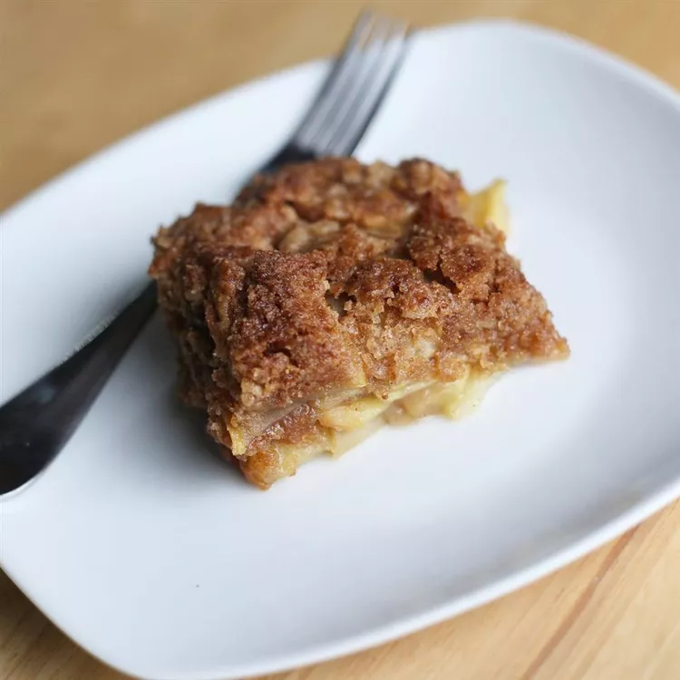

Apple Cobbler Crumble

Description
This super easy apple cobbler crumble is great for unexpected company or spur-of-the-moment cravings. The juice from the fruit cooks out to produce enough moisture to make this cobbler delicious.
Ingredients
- 1 cup self-rising flour
- 1 cup white sugar
- ½ cup butter, softened
- ½ teaspoon ground cinnamon
- 4 Granny Smith apples, cored and sliced
Steps
- Gather the ingredients. Preheat the oven to 350 degrees F (175 degrees C). Grease a 9x9-inch baking dish.
- Use a pastry blender or fork to blend together flour, sugar, butter, and cinnamon in a large bowl until crumbly. Reserve 3/4 cup flour mixture to use as topping.
- Sprinkle a light layer of flour mixture into the prepared baking dish; top with a layer of apples. Continue to alternate layers of flour mixture with apples, ending with apples. Sprinkle top apple layer with reserved 3/4 cup flour mixture.
- Bake in the preheated oven until apples are tender and topping is lightly browned, 30 to 35 minutes. Allow cobbler to cool for 10 minutes before serving.
credits
credits 2
home page